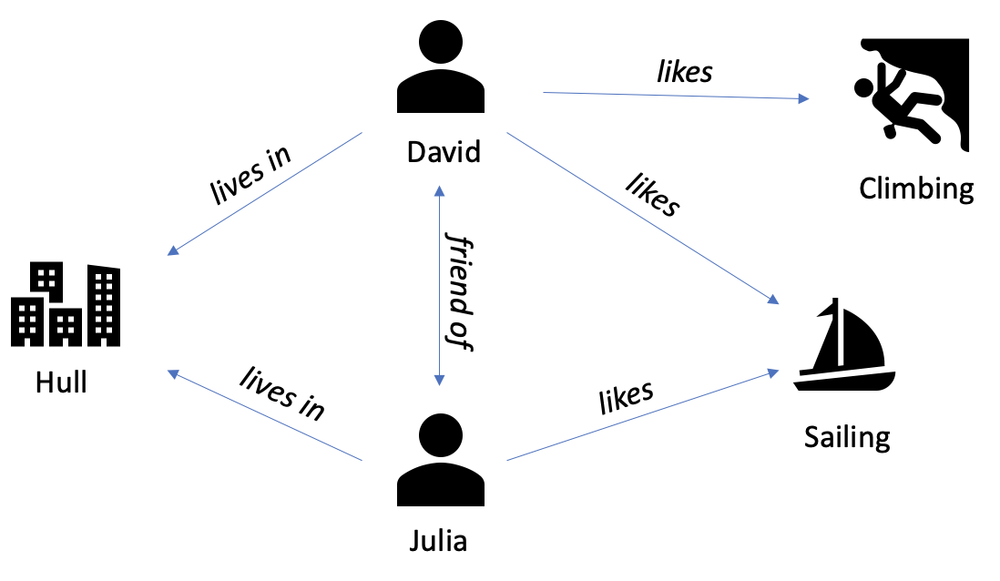
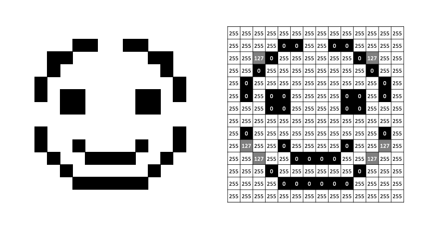

2.1.4 Data Sources and Formats
Contents
2.1.4 Data Sources and Formats¶
Once you’ve found a dataset for your research question there are many different formats it could be in - tabular data, databases, documents, images or many more. In this section we give an overview of common data types and how they can be loaded into Python.
Several of the file/data formats here are also covered in our Research Software Engineering course. Here we show how to load data with Pandas, and also introduce some new data types.
Tabular Data Files¶
Comma-separated values files (CSVs)¶
Tabular data files, and particularly comma-separated values (CSV) files, are likely to be the data format you encounter most often. These specify a single table of rows and columns in the following format:
"Subject","Teacher","Day of Week","Time Start","Time End"
"Maths","Mr F","Monday",1000,1200
"English","Ms P","Tuesday",1100,1300
"Physics","Mrs A","Thursday",1400,1600
"French","Mr F","Friday",1000,1300
The first line (usually) specifies the table column names, with each name separated by a comma. The subsequent lines specify the values of those columns for each row in our data, with each column value separated by a comma.
As an example, we will use a dataset downloaded from The World Bank, giving the percentage of people living in urban environments by country worldwide since 1960. You can find the original source data here.
To load a CSV file to a Pandas data frame you can use the Pandas read_csv function:
import pandas as pd
df = pd.read_csv("data/urban_population.csv")
Let’s look at the first 5 rows of the data:
df.head()
| Country Name | Country Code | Indicator Name | Indicator Code | 1960 | 1980 | 2000 | 2020 | Unnamed: 8 | |
|---|---|---|---|---|---|---|---|---|---|
| 0 | Aruba | ABW | Urban population (% of total population) | SP.URB.TOTL.IN.ZS | 50.776000 | 50.472000 | 46.717000 | 43.697000 | NaN |
| 1 | Africa Eastern and Southern | AFE | Urban population (% of total population) | SP.URB.TOTL.IN.ZS | 14.704688 | 20.845000 | 28.669286 | 36.783306 | NaN |
| 2 | Afghanistan | AFG | Urban population (% of total population) | SP.URB.TOTL.IN.ZS | 8.401000 | 15.995000 | 22.078000 | 26.026000 | NaN |
| 3 | Africa Western and Central | AFW | Urban population (% of total population) | SP.URB.TOTL.IN.ZS | 14.670329 | 24.518577 | 35.352981 | 47.848625 | NaN |
| 4 | Angola | AGO | Urban population (% of total population) | SP.URB.TOTL.IN.ZS | 10.435000 | 24.298000 | 50.087000 | 66.825000 | NaN |
Each row in the data corresponds to a country, with columns for the country’s name, the urban population in 1960, 1980, 2000 and 2020, and some other metadata.
The .info() method of a DataFrame gives us a useful summary of the columns it contains:
df.info()
<class 'pandas.core.frame.DataFrame'>
RangeIndex: 266 entries, 0 to 265
Data columns (total 9 columns):
# Column Non-Null Count Dtype
--- ------ -------------- -----
0 Country Name 266 non-null object
1 Country Code 266 non-null object
2 Indicator Name 266 non-null object
3 Indicator Code 266 non-null object
4 1960 263 non-null float64
5 1980 263 non-null float64
6 2000 263 non-null float64
7 2020 262 non-null float64
8 Unnamed: 8 0 non-null float64
dtypes: float64(5), object(4)
memory usage: 18.8+ KB
Each column in a Pandas DataFrame has a single type. The urban population percentages in columns 1960, 1980, 2000 and 2020 all contain floating point numbers (float64), for example. When columns contain a mixture of data types or strings, Pandas will give the whole column the generic object type. Sometimes quirks in the data may cause Pandas to infer a different type to what you expect - we will revisit this in Section 2.2.1.
We can also see that some columns have missing values (the data has 266 rows, but some columns have fewer than 266 “non-null” values), and have a strange additional column Unnamed: 8 that has only missing (null) values. This is another topic we’ll revisit later.
Customising pandas.read_csv¶
The original file from the World Bank contains a few lines of metadata at the top:
!head data/urban_population_header.csv
"Data Source","World Development Indicators",
"Last Updated Date","2021-06-30",
Country Name,Country Code,Indicator Name,Indicator Code,1960,1980,2000,2020,
Aruba,ABW,Urban population (% of total population),SP.URB.TOTL.IN.ZS,50.776,50.472,46.717,43.697,
Africa Eastern and Southern,AFE,Urban population (% of total population),SP.URB.TOTL.IN.ZS,14.7046880270389,20.8449997980123,28.6692864525936,36.7833061490919,
Afghanistan,AFG,Urban population (% of total population),SP.URB.TOTL.IN.ZS,8.401,15.995,22.078,26.026,
Africa Western and Central,AFW,Urban population (% of total population),SP.URB.TOTL.IN.ZS,14.6703287907718,24.5185774336299,35.3529813285238,47.8486254352506,
Angola,AGO,Urban population (% of total population),SP.URB.TOTL.IN.ZS,10.435,24.298,50.087,66.825,
Albania,ALB,Urban population (% of total population),SP.URB.TOTL.IN.ZS,30.705,33.762,41.741,62.112,
The column names start on line 4 of the file, and the previous lines give metadata on where the file came from and when it was updated.
Using read_csv on this file (with default arguments) gives an error:
df = pd.read_csv("data/urban_population_header.csv")
---------------------------------------------------------------------------
ParserError Traceback (most recent call last)
Cell In [5], line 1
----> 1 df = pd.read_csv("data/urban_population_header.csv")
File /opt/hostedtoolcache/Python/3.9.13/x64/lib/python3.9/site-packages/pandas/util/_decorators.py:311, in deprecate_nonkeyword_arguments.<locals>.decorate.<locals>.wrapper(*args, **kwargs)
305 if len(args) > num_allow_args:
306 warnings.warn(
307 msg.format(arguments=arguments),
308 FutureWarning,
309 stacklevel=stacklevel,
310 )
--> 311 return func(*args, **kwargs)
File /opt/hostedtoolcache/Python/3.9.13/x64/lib/python3.9/site-packages/pandas/io/parsers/readers.py:678, in read_csv(filepath_or_buffer, sep, delimiter, header, names, index_col, usecols, squeeze, prefix, mangle_dupe_cols, dtype, engine, converters, true_values, false_values, skipinitialspace, skiprows, skipfooter, nrows, na_values, keep_default_na, na_filter, verbose, skip_blank_lines, parse_dates, infer_datetime_format, keep_date_col, date_parser, dayfirst, cache_dates, iterator, chunksize, compression, thousands, decimal, lineterminator, quotechar, quoting, doublequote, escapechar, comment, encoding, encoding_errors, dialect, error_bad_lines, warn_bad_lines, on_bad_lines, delim_whitespace, low_memory, memory_map, float_precision, storage_options)
663 kwds_defaults = _refine_defaults_read(
664 dialect,
665 delimiter,
(...)
674 defaults={"delimiter": ","},
675 )
676 kwds.update(kwds_defaults)
--> 678 return _read(filepath_or_buffer, kwds)
File /opt/hostedtoolcache/Python/3.9.13/x64/lib/python3.9/site-packages/pandas/io/parsers/readers.py:581, in _read(filepath_or_buffer, kwds)
578 return parser
580 with parser:
--> 581 return parser.read(nrows)
File /opt/hostedtoolcache/Python/3.9.13/x64/lib/python3.9/site-packages/pandas/io/parsers/readers.py:1253, in TextFileReader.read(self, nrows)
1251 nrows = validate_integer("nrows", nrows)
1252 try:
-> 1253 index, columns, col_dict = self._engine.read(nrows)
1254 except Exception:
1255 self.close()
File /opt/hostedtoolcache/Python/3.9.13/x64/lib/python3.9/site-packages/pandas/io/parsers/c_parser_wrapper.py:225, in CParserWrapper.read(self, nrows)
223 try:
224 if self.low_memory:
--> 225 chunks = self._reader.read_low_memory(nrows)
226 # destructive to chunks
227 data = _concatenate_chunks(chunks)
File /opt/hostedtoolcache/Python/3.9.13/x64/lib/python3.9/site-packages/pandas/_libs/parsers.pyx:805, in pandas._libs.parsers.TextReader.read_low_memory()
File /opt/hostedtoolcache/Python/3.9.13/x64/lib/python3.9/site-packages/pandas/_libs/parsers.pyx:861, in pandas._libs.parsers.TextReader._read_rows()
File /opt/hostedtoolcache/Python/3.9.13/x64/lib/python3.9/site-packages/pandas/_libs/parsers.pyx:847, in pandas._libs.parsers.TextReader._tokenize_rows()
File /opt/hostedtoolcache/Python/3.9.13/x64/lib/python3.9/site-packages/pandas/_libs/parsers.pyx:1960, in pandas._libs.parsers.raise_parser_error()
ParserError: Error tokenizing data. C error: Expected 3 fields in line 4, saw 9
This is because pandas is trying to use the first line in the file to define the columns present in our data. To avoid this, we can use the skiprows argument to tell pandas our table starts on line 4 (skipping the first 3 lines):
df = pd.read_csv("data/urban_population_header.csv", skiprows=3)
df.head()
| Country Name | Country Code | Indicator Name | Indicator Code | 1960 | 1980 | 2000 | 2020 | Unnamed: 8 | |
|---|---|---|---|---|---|---|---|---|---|
| 0 | Aruba | ABW | Urban population (% of total population) | SP.URB.TOTL.IN.ZS | 50.776000 | 50.472000 | 46.717000 | 43.697000 | NaN |
| 1 | Africa Eastern and Southern | AFE | Urban population (% of total population) | SP.URB.TOTL.IN.ZS | 14.704688 | 20.845000 | 28.669286 | 36.783306 | NaN |
| 2 | Afghanistan | AFG | Urban population (% of total population) | SP.URB.TOTL.IN.ZS | 8.401000 | 15.995000 | 22.078000 | 26.026000 | NaN |
| 3 | Africa Western and Central | AFW | Urban population (% of total population) | SP.URB.TOTL.IN.ZS | 14.670329 | 24.518577 | 35.352981 | 47.848625 | NaN |
| 4 | Angola | AGO | Urban population (% of total population) | SP.URB.TOTL.IN.ZS | 10.435000 | 24.298000 | 50.087000 | 66.825000 | NaN |
There’s not a single CSV data “standard” that everyone follows, so it’s common to need to tweak things to load properly. Other examples include:
Different “delimeters”, e.g., Tab-separated values files (TSVs) with tabs separating column values instead of commas.
Footers: Lines with metadata/other information not part of the table at the end of the file.
Comments: Annotations anywhere in the file that shouldn’t be included in the table.
pd.read_csv can be customised to deal with all of these and more, for example:
df = pd.read_csv(
"myfile.csv",
delimeter="\t", # columns separated by tabs
skipfooter=3, # exclude last 3 lines
comment="#", # exclude lines starting with "#"
)
Exercise
Later on we’ll be using the “Palmer Penguins” dataset, which we have saved at the path data/penguins.csv. Load this dataset into a pandas data frame. What type of data do you think it contains? What are the types of the columns and do they match what you’d expect?
Solution
df = pd.read_csv("data/penguins.csv") to load the data into pandas. We’ll discuss the answer to the other questions later, but you may have noticed that some of the columns have the generic object type even though it looks like they contain numeric data.
Excel Spreadsheets¶
As CSV files are a plaintext (human readable) format and don’t need proprietry software to use and create they are always preferable to Excel spreadsheets for raw data, if available. However, it is still common to find data in Excel .xls or .xlsx files.
If needed, Pandas also has a function pandas.read_excel to load data from Excel spreadsheets. The format is very similar to read_csv:
df = pd.read_excel(
"my_spreadsheet.xlsx",
sheet_name="Sheet1"
)
Note you must specify which worksheet you want to load as a data frame. If you want to load tables from multiple worksheets you would need to load them into multiple data frames.
Databases¶
We can think of databases as containers for data. Typically, databases allow for easy storage, retrieval, update, and analysis of data.
In the case of tabular data, a database may have many tables. A database can be flat, or it can be relational.
Example:
Flat Database with single table:
Subject |
Teacher |
Teacher Email |
Teacher Phone Number |
Day of Week |
Time Start |
Time End |
|---|---|---|---|---|---|---|
Maths |
Mr F |
07123123123 |
Monday |
1000 |
1200 |
|
English |
Ms P |
07456456456 |
Tuesday |
1100 |
1300 |
|
Physics |
Mrs A |
07789789789 |
Thursday |
1400 |
1600 |
|
French |
Mr F |
07123123123 |
Friday |
1000 |
1300 |
Relational database with two tables:
Subject |
Teacher |
Day of Week |
Time Start |
Tie End |
|---|---|---|---|---|
Maths |
Mr F |
Monday |
1000 |
1200 |
English |
Ms P |
Tuesday |
1100 |
1300 |
Physics |
Mrs A |
Thursday |
1400 |
1600 |
French |
Mr F |
Friday |
1000 |
1300 |
Teacher |
Teacher Email |
Teacher Phone Number |
|---|---|---|
Mr F |
07123123123 |
|
Ms P |
07456456456 |
|
Mrs A |
07789789789 |
Flat databases can be simple but also inefficient. Relational databases, with data stored in a series of interconnected tables, can be more complicated but more computationally efficient.
SQL Databases & RDBMS¶
Structured Query Lanage (SQL) is a standard language for storing, manipulating and retrieving data in databases.
An RDBMS (Relational Database Management System) is the basis for SQL and relies on the relational data model. Many modern and popular databases implement the ideas of an RDBMS. Some common implementations are:
PostgreSQL
SQLite
MySQL
Oracle
MS Access
We use SQL to interact with these databases. You can find some basic, interactive, tutorials at W3Schools.
NoSQL Databases¶
NoSQL databases (aka “not only SQL”) are non tabular, and store data differently than relational tables. NoSQL databases come in a variety of types based on their data model. The main types are document, key-value, wide-column, and graph. They provide flexible schemas and scale easily with large amounts of data and high user loads. https://www.mongodb.com/nosql-explained
Some common NoSQL Databases include:
Elasticsearch (document)
MongoDB (document)
DynamoDB (key-value)
Gaffer (graph)
Document example
{
"name": "Jane",
"dob": "2012-04-23T18:25:43.511Z",
"interests": ["running", "swimming"],
"counter": 104
}
Key-Value example:

Graph example: 
Unfortunately, different types of databases will often have their own, unique, query languages, beyond SQL - more to learn!
Where Is the Data?¶
Databases can exist on your local machine or can be hosted elsewhere. Typically, we’ll want to host a database somewhere that everyone who needs access can reach.
Many cloud providers offer database solutions with easy-to-use interfaces, allowing us (for a cost!) to worry less about exactly how the DBMS is working and focus, instead, on the data itself.
Which Database to Use¶
Which type of database you choose should be driven by your data and how you plan to use it. You may find that your data can be expressed in more than one of the forms above or as a table. You then need to weigh up different factors to decide which form and which database, if any, to use.
Some factors you may consider (unordered!):
Ease of use
Cost
Footprint on disk
Footprint in memory
Retrieval/update speed
Many blogs and articles have been written on the choice of database, for example this xplenty article.
Application Programming Interfaces (APIs)¶
Application programming interfaces (APIs) are services that allow you to programmatically request information, including datasets, from a remote server. Large, digitally mature organisations commonly have APIs available to access their data, including GitHub, Twitter and the Office for National Statistics, for example. Advantages of APIs include:
It’s possible to make queries to request a tailored subset of a dataset, so you only get what you’re interested in.
It’s straightforward to automate making many similar queries (i.e., to request many different datasets) with different parameters.
If a dataset is updating regularly (maybe you want to know the current weather at a location, for example) they provide a robust way to get the latest status of what you’re interested in.
They usually should provide a reproducible way for others to download the same data you’re using.
Most APIs follow the REST style, which we briefly introduce here, but you may also come across GraphQL APIs. This blog has an overview of both types.
Datamuse API¶
As an example, we’ll try the Datamuse API, which can be used to find relationships between words and terms (similar words, words that rhyme and so on). You can find documentation for it here: https://www.datamuse.com/api/
An API query has four main components: a base URL, an endpoint, parameters, and headers:
Base URL: The address of the server hosting the data we want to access - all our API queries will start with this. For the Datamuse API it’s: https://api.datamuse.com
Endpoint: Each API might have multiple types of data we can query, known as different “endpoints”. The path to the endpoint is added to the base URL. The Datamuse API has two endpoints:/words for searching for relationships (of different types) between words, and /sug, which can be used for auto-completion/spelling correction.
Parameters: Define what data subset we’re interested in and are provided in the format name=value. These are added to the query after a ? following the endpoint. To specify multiple parameters, separate each parameter name and value pair with an &. The available parameters should be listed in the API’s documentation (here for Datamuse).
The parameter string ?rel_jjb=dog&max=5 defines two parameters and values:
rel_jjb=dog: Find adjectives commonly used to describe the noun “dog”.max=5: Return 5 results.
Headers: Provide additional context/metadata about your request, the most common being authentication information. Authentication may be used to only give you access to resources you have permission to see, limit the number of requests you can make within a certain amount of time, or for billing purposes (if the API isn’t free).
The Datamuse API doesn’t require authentication, so we don’t need to add any headers here. If the API you’re using requires it they should provide documentation that describes what you need to do - here is an example from GitHub, and here is how to add headers in the Python requests library.
Full query: Adding together all the components we have the full API query:
You can open this in a web browser and should see something like this:
[
{"word": "little", "score": 1001},
{"word": "old", "score": 1000},
{"word": "hot", "score": 999},
{"word": "big", "score": 998},
{"word": "black", "score": 997}
]
We get the top 5 words describing “dog” and a score that indicates how strong the association is.
The most common format for data returned by an API is JSON (JavaScript Object Notation) from the JavaScript language, which is commonly used in web development. JSONs have a similar structure to Python dictionaries or lists of Python dictionaries. Python has a built-in library json for converting data to and from the JSON format (see here), and Pandas also has a function for creating a DataFrame from a JSON file (pandas.read_json).
We can make the same API query in Python using the requests library, as follows:
import requests
url = "https://api.datamuse.com/words"
params = {"rel_jjb": "dog", "max": 5}
r = requests.get(url, params=params)
Note that we can define the parameters in a dictionary, which is much easier to read than the raw format in the query string seen earlier. To check whether the request worked you can check the status code:
print(r.status_code)
200
Codes in the 200s usually indicate a successful query, for the meanings of other codes see here, or print(r.content) may give you more information about what happened.
We can convert the result into a list of dictionaries as follows:
result_list = r.json()
print(result_list)
[{'word': 'little', 'score': 1001}, {'word': 'old', 'score': 1000}, {'word': 'hot', 'score': 999}, {'word': 'big', 'score': 998}, {'word': 'black', 'score': 997}]
And we can interact with that list in the usual Python way:
print(result_list[0]["word"])
little
You can also load an API query directly into a Pandas DataFrame:
import pandas as pd
df = pd.read_json("https://api.datamuse.com/words?rel_jjb=dog&max=5")
df
| word | score | |
|---|---|---|
| 0 | little | 1001 |
| 1 | old | 1000 |
| 2 | hot | 999 |
| 3 | big | 998 |
| 4 | black | 997 |
But this may not work well if your query returns a more complex data structure - in that case it’s best to start with the requests library.
Bear in mind it’s likely the service you’re using will limit both the rate of queries you can make, and the amount of data returned per query. If you want more data than can be returned by one query, an API will usually provide a way to get the data with multiple queries - this is known as “pagination” (see this blog post for example). If you’re making many queries you may need to limit their rate in your script to avoid breaching the usage rules of the API - a quick way to do that would be to use the time.sleep function in Python.
This “public-apis” repository on GitHub maintains a list of open APIs that should be good for learning purposes: https://github.com/public-apis/public-apis. The UK government also maintains a list of APIs providing data on many different areas of government & life in the UK: https://www.api.gov.uk/
Exercise
Use the Datamuse API to find 3 words that rhyme with “cat” and load them into a Pandas data frame. You’ll need to use the Datamuse documnetation to find which parameter will search for rhyming words.
Solution
The relevant parameter is rel_rhy, and the query and pandas function needed is pd.read_json("https://api.datamuse.com/words?rel_rhy=cat&max=3")
Image Data¶
Images are commonly represented as a n-dimensional tensor of pixel values.
Black and White¶
A simple form of this can be shown with a black and white image. The 13x13 pixel smiley can be represented by a 2D tensor (width,height) of 0s and 1s. Black and white images can be thought of as a binary off/on for each pixel.
Grayscale¶
If we want to move to grayscale - allowing shades of gray between black and white - we can do this with intermediate values between black and white. Here we change black and white to 0 and 255 (8-bit representation), shades of gray are everything in between.

RGB¶
We can introduce colour using an RGB (Red Green Blue) representation. Here, we store the red, green, and blue values separately - these individual representations are known as channels. We now use a 3D tensor to represent this image (width,height,channels).

Libraries¶
Some popular libraries for processing and analysing image data in Python include:
opencv-python: OpenCV (Open-source Computer Vision) packages for Python. Contains hundreds of computer vision algorithms.
Pillow: PIL (Python Imaging Library) fork. “This library provides extensive file format support, an efficient internal representation, and fairly powerful image processing capabilities”.
torchvision: Part of the wider PyTorch project. “The torchvision package consists of popular datasets, model architectures, and common image transformations for computer vision”.
tf.keras.preprocessing: Part of the wider tensorflow/keras ecosystem, the preprocessing module provides preprocessing utilities for image data.
Text Data¶
Text data is common in data science applications, anything from analysing Tweets and social media to documents and novels. We’ll cover some general techniques for handling text data in this module, but we won’t delve into the details of the wider field of “Natural Language Processing” (NLP). Some popular libraries and resources for processing and analysing text data in Python include:
NLTK: Well-established natural language processing toolkit for Python, offering a wide range of text processing techniques in many different languages.
Spacy: A more modern alternative to NLTK, offering higher performance, state of the art algorithms, and better integration with modelling frameworks in some cases.
Scikit-Learn: Has common NLP preprocessing functions which can be integrated with modelling pipelines using many different machine learning algorithms.
Hugging Face: For implementations of state-of-the-art deep learning models from research.
Textract: Text data may appear in many file formats other than plaintext files (
.txtor similar), such as in PDFs, word documents, or even within images. Textract provides a single interface for extracting text data from many different formats.
Other¶
Audio: commonly stored as
.wavor.mp3and displayed as a waveform - digitised audio can be used for things like training speech recognition models. Lots of crossover with signal processing! Librosa is a popular python package for working with audio.Video: can be thought of as many images + audio!
Geospatial: data relating to any location on the Earth’s surface. The geopandas library combines the capabilities of shapely and Pandas to make working with this datatype easier.
Time Series: Data that can be expressed as observations over time, e.g., stock price data. Honourable mention to sktime for analysis.
XML (Extensible Markup Language): We recommend using a library such as BeautifulSoup to help parse this heavily structured format.
Web scraping: extracting structured data from web sites. Scrapy is a popular library here.